Neeps Inventory
Equipment sign-out for a team that moves a lot of kit. Sign out a whole shoot's worth of gear with one signature, let the person sign on their own phone, scan QR labels instead of searching, and send device photos straight from the phone that took them.
Developed by Nathaniel Luis in collaboration with me, as an internal, login-only tool for Neeps Group. Screens below use sample data — every name and record is fictional.
The problem
Neeps Group needed one place to keep track of its equipment — what it owns, who has it, what condition it left in and when it's due back. Nathaniel Luis and I built that system together: a Django inventory with QR labels on every device and a signed record of every sign-out.
Signing devices out one at a time works for a laptop. It doesn't work for a shoot: nine lenses, batteries, mics and a gimbal would mean nine forms and nine signatures, drawn with a mouse, by someone who isn't sitting at the desk.
The goal was to make handing out and taking back equipment as fast as the handover itself — without losing the record. Every item still needs a person, a condition, a date and a signature; the work was getting all of that in one pass, on whichever device is to hand.
What we built
Bulk sign-out & check-in
Tick devices — or click a person's name to grab everything they have — and sign them out or back in together. One signature, one record per device, written in a single transaction.
Sign on your own phone
Instead of signing with a mouse, send a link — or show a QR code to scan on the spot. No login: a private, single-use link that expires after seven days and can be replaced.
Confirm every item, dispute the condition
On the phone, each item needs an answer — "I have it" or "Not with me" — and the taker can say the condition doesn't match, with their own rating and a note. Returns work the same way.
Scan to sign out or check in
Point a phone or laptop camera at the QR labels, use a USB scanner, or type a serial or asset tag. Each scan beeps onto a list; one tap opens bulk sign-out or check-in.
Photos from the phone, live
"Add photos from phone" on the device form shows a QR code. Photos taken on the phone are shrunk on the device, uploaded, and appear on the laptop within seconds — then saved with the device.
History that answers questions
Every sign-out ever, with live search, status and date filters and CSV export — who had it, when it came back, late or not, condition out → in, and how each side signed.
Screens
Signing out a kit

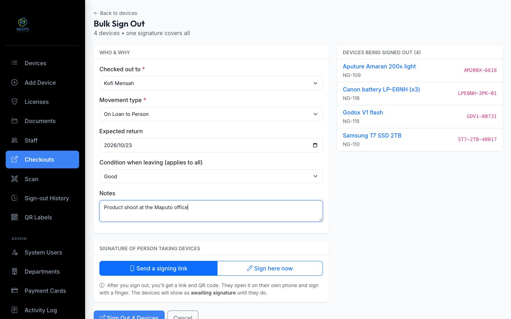
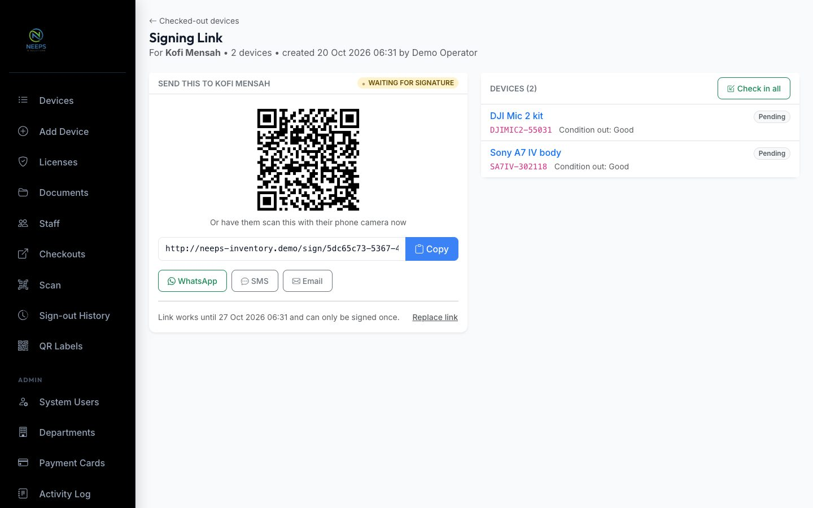
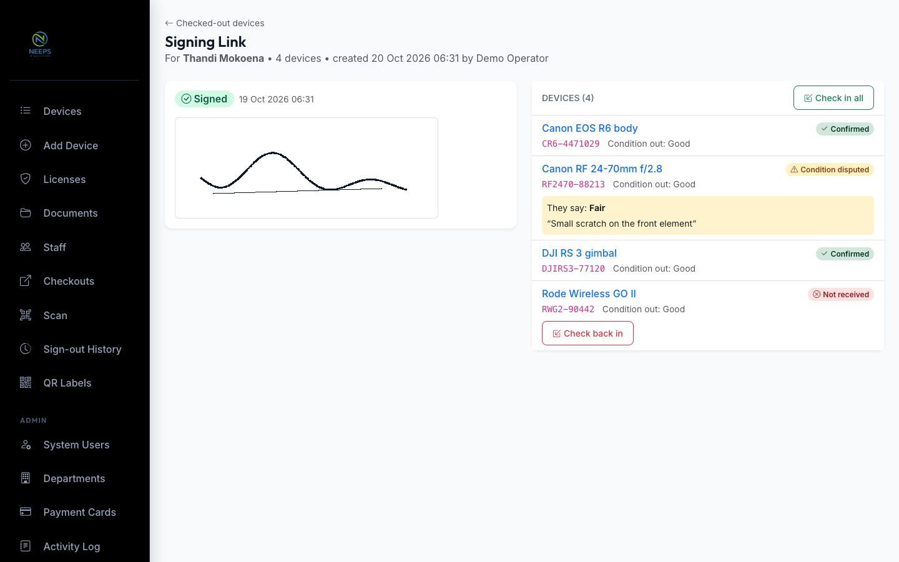
On a phone
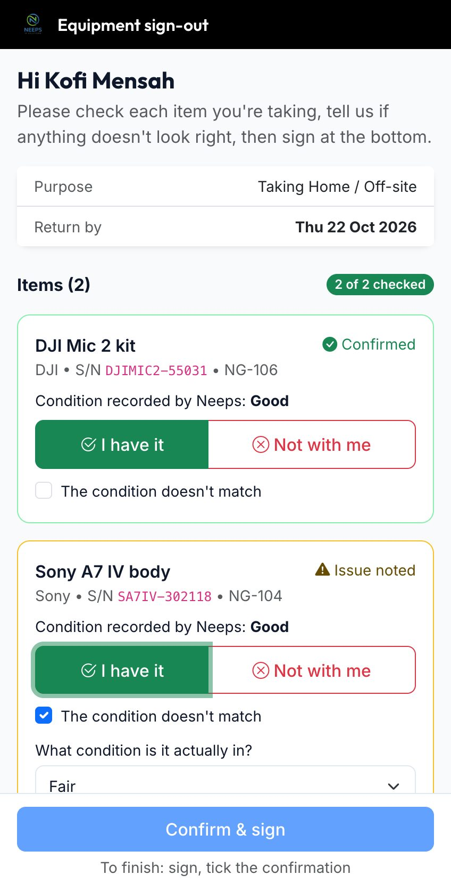
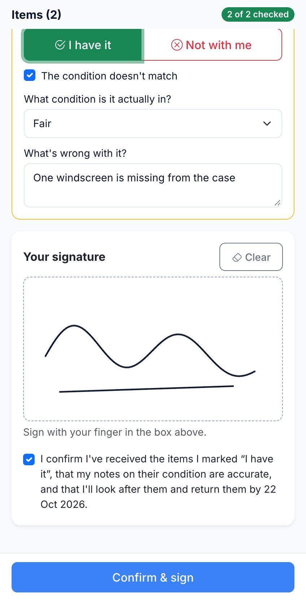
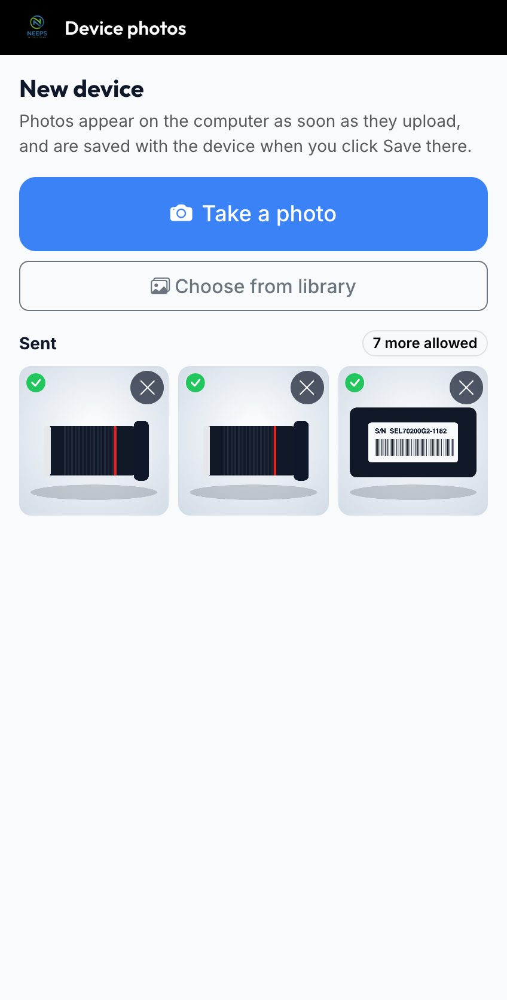
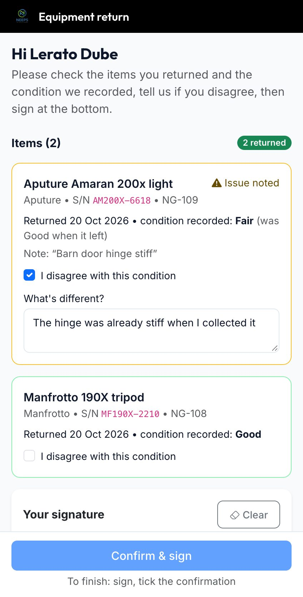
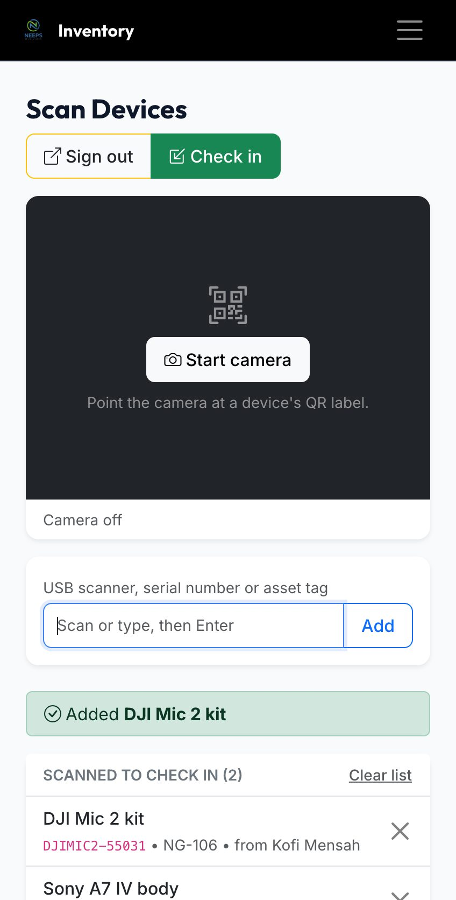
Coming back
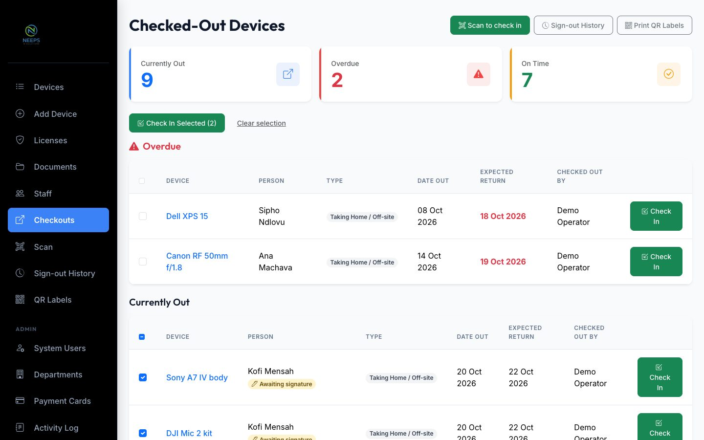
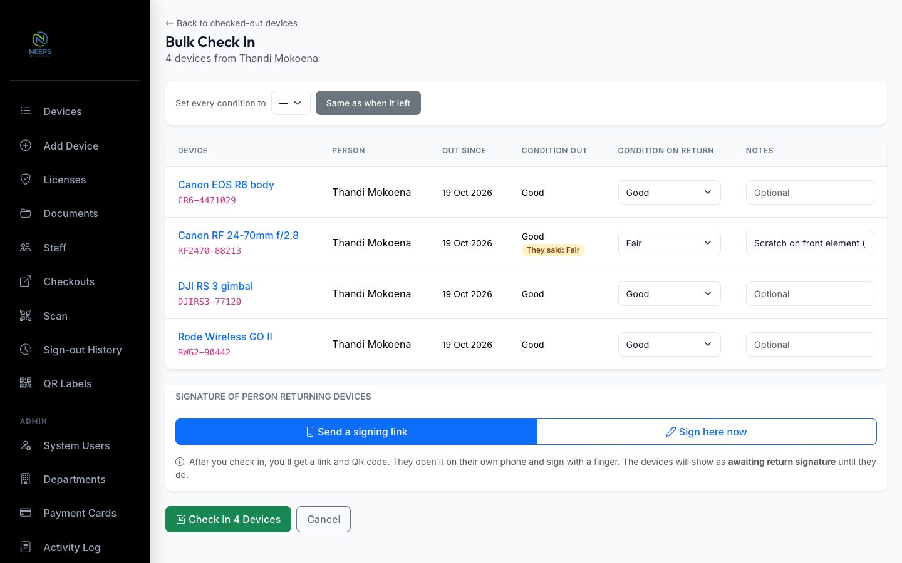
Faster input
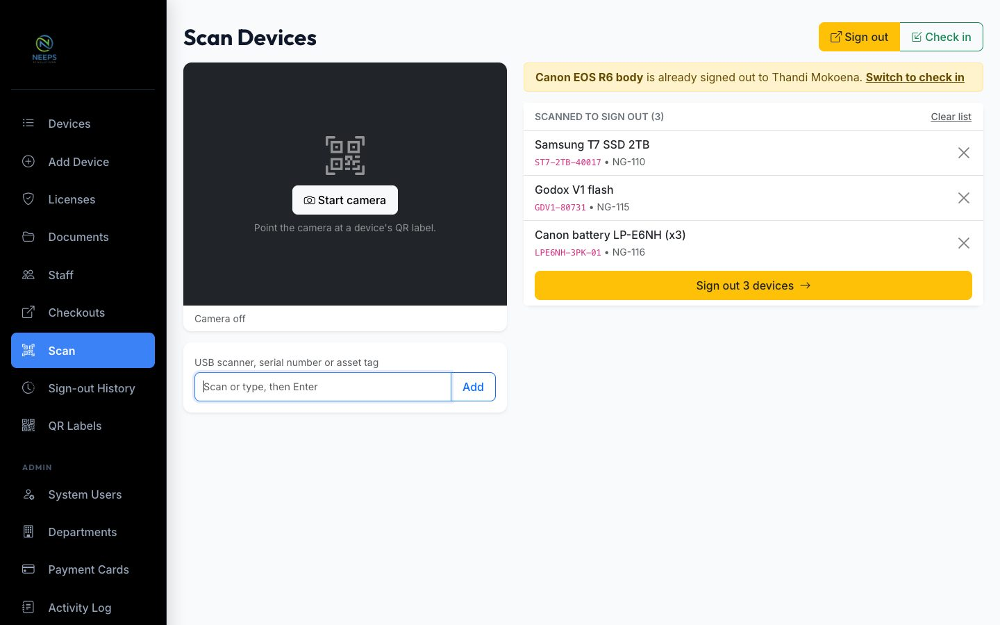
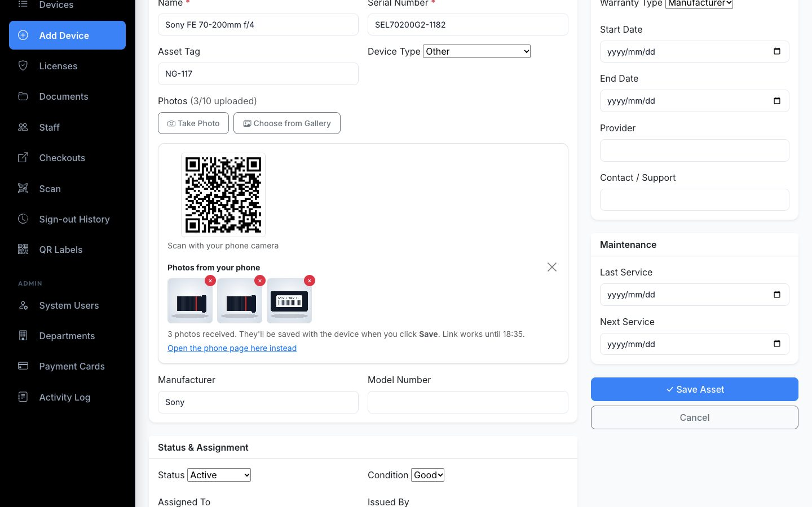
The record
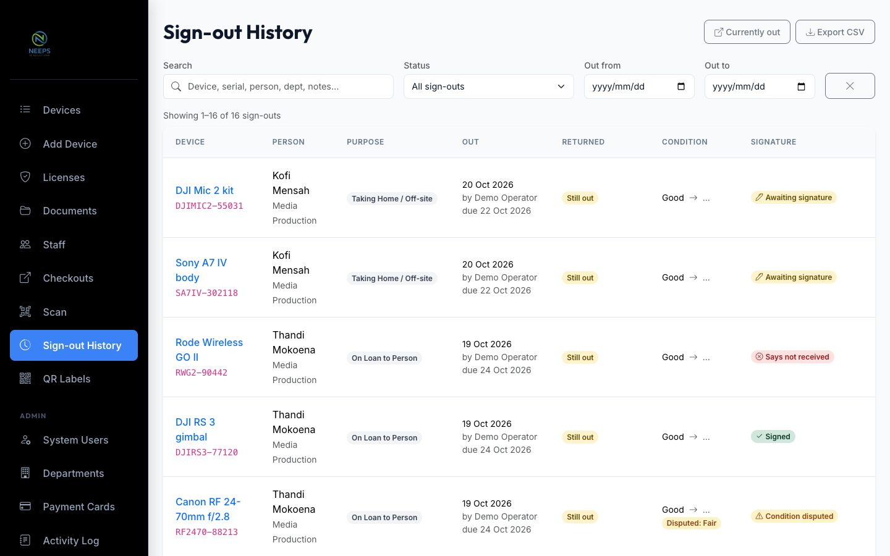
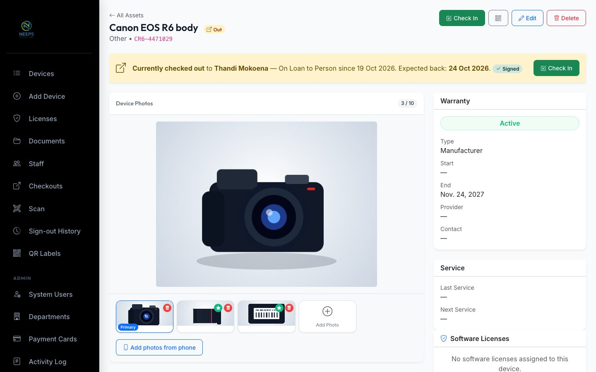
Architecture
Django 5.2 server-rendered, Bootstrap 5, deployed on Render
├── /checkout/bulk/ one form → a DeviceCheckout per device, atomically
├── /checkout/bulk-checkin/ condition + note per device, one return signature
├── /checkout/history/ filters + pagination, partial HTML for live search, CSV
├── /scan/ /scan/lookup/ QR URL, token, serial or asset tag → device + status
└── /photos/session/ laptop side of a phone-photo session (QR, poll, delete)
Public, token-scoped pages no login — the UUID in the URL is the credential
├── /sign/<token>/ confirm each item, dispute condition, sign (out or return)
└── /p/<token>/ take photos, shrink on the phone, upload with progress
Models
├── SignatureRequest kind = sign-out | return, expiry, signed_at, signer IP
├── DeviceCheckout per-item answer, disputes, out + return signatures
├── PhotoUploadSession 12-hour link, optional device
└── StagedPhoto photos waiting for a device that isn't saved yet
Browser vanilla JS, no build step
├── BarcodeDetector → jsQR native QR decoding where available, fallback elsewhere
├── canvas resize 2048px JPEG before upload
└── FormDraft autosave to localStorage, cleared only on success
A signing link doesn't hold the equipment hostage. The devices are signed out the moment the operator submits — because physically, they've already left the building — and "awaiting signature" is a visible state on the dashboard, the device page and the history rather than a gate. The alternative, keeping devices "in" until someone signs on their phone later, would make the inventory lie about where things actually are.
The harder parts
One signature, many honest records
A batch is a convenience for the person signing, not a new kind of record. Bulk sign-out still writes one checkout per device, each with its own audit-log entry, so history, overdue tracking and check-in work exactly as they did for single devices. The batch only exists as the signing request they share — which is also how "check in all from this batch" and "one return link per person" fall out naturally.
Two signatures on one record
Adding return signatures meant a checkout now carries two independent acts: what the taker confirmed going out, and what they confirmed coming back. They're stored side by side — separate signature, dispute and link fields — so signing for a return can never overwrite what was agreed at sign-out, and a test pins that down.
Scanning without an app
The QR labels already encoded a URL, so the scanner accepts the full URL, the bare token, a
serial or an asset tag. Chrome on Android decodes with the native BarcodeDetector;
everywhere else lazily loads jsQR. The same label stays in frame for several
reads, so repeats are ignored for a couple of seconds, and USB scanners just work because they
type into the field and press Enter.
Nothing lost to a refresh
Every multi-step form autosaves — fields, selections and even a half-drawn signature — and the draft is only cleared once the server confirms. On the phone signing page it survives a failed submit too. Phone photos for a device that hasn't been saved yet are staged server-side and the laptop panel reopens the same session after a refresh, so a validation error on "Add Device" never costs the photos.
Photos that upload on mobile data
A 12-megapixel photo is several megabytes. Resizing it on the phone with
createImageBitmap and a canvas — respecting EXIF orientation — before upload turns
it into a few hundred kilobytes, so a batch of photos arrives in seconds on a weak signal. The
server still validates every file as an image and enforces the ten-photo limit.